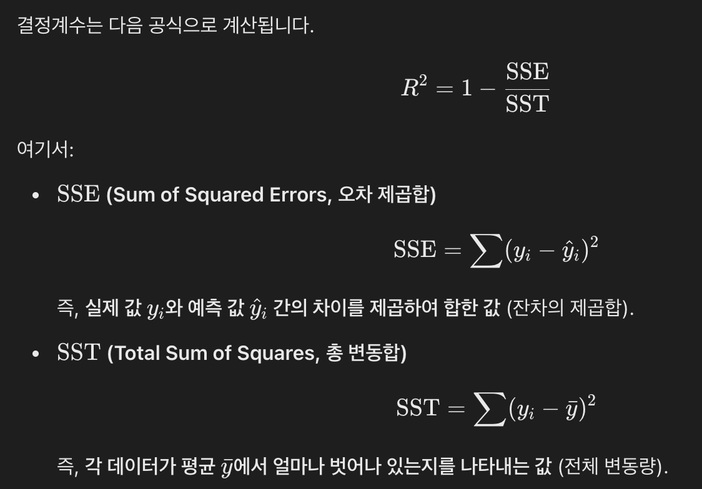
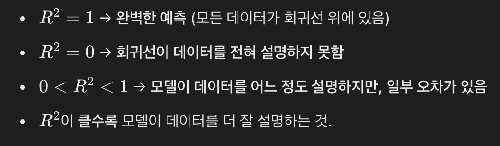
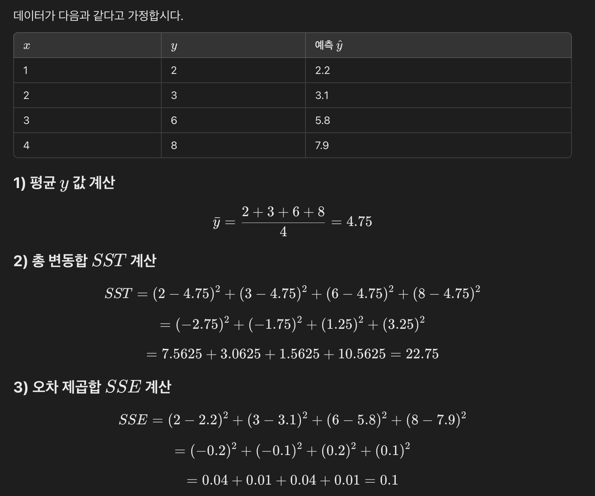
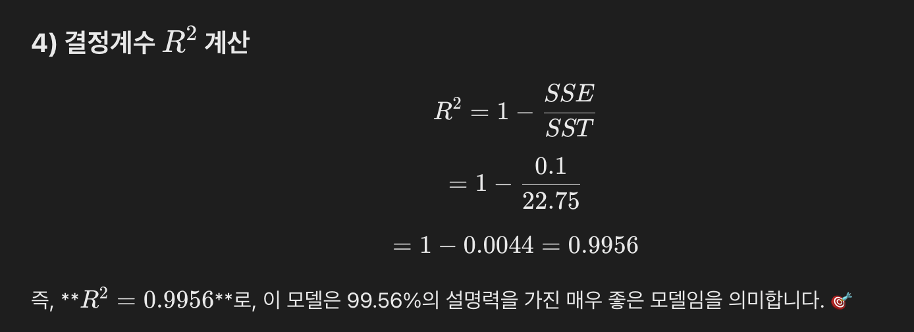
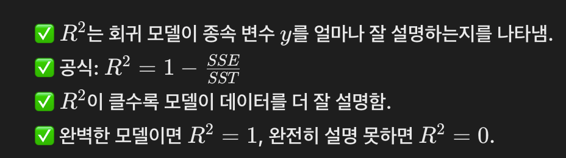
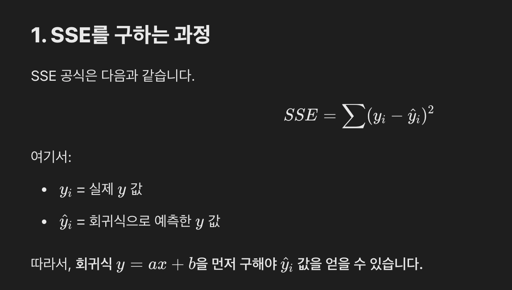
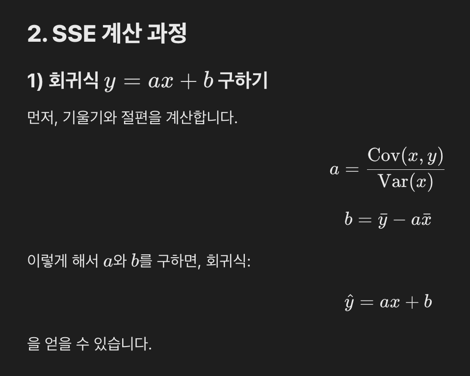
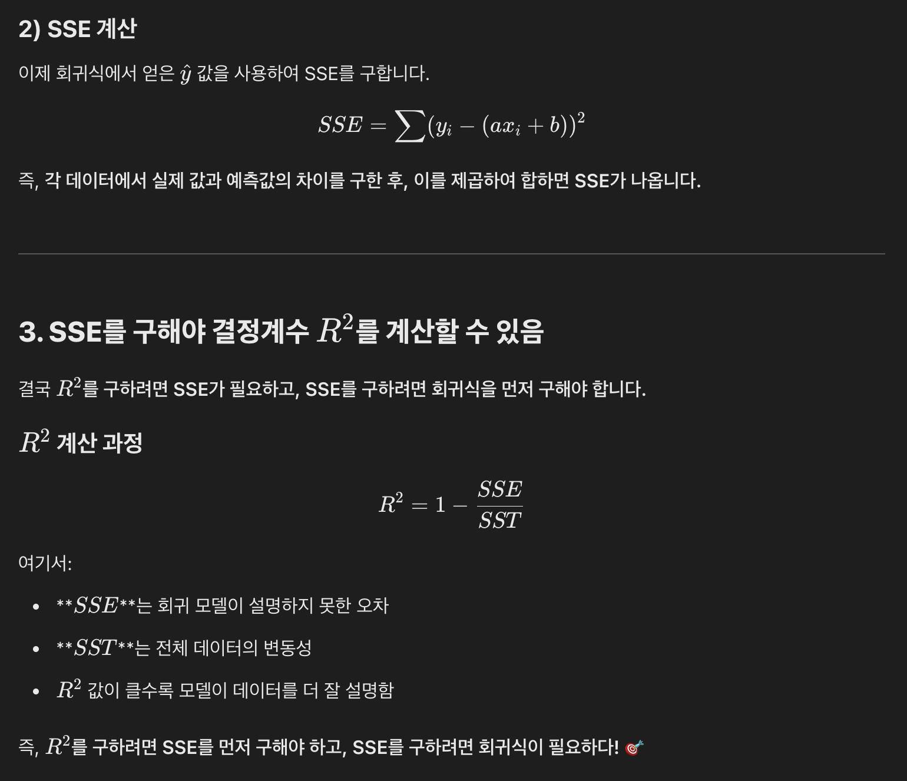

원문 보존 단위
결정계수 R² 구하는 방법과 계산 예제
<table_of_contents color="gray"/>
결정계수 ($R^2$) 구하는 방법
결정계수 $R^2$는회귀 모델이 데이터를 얼마나 잘 설명하는지를 나타내는 지표입니다.
즉,독립 변수 $x$가 종속 변수 $y$의 변동을 얼마나 설명하는지를 측정하는 값입니다.
1. 결정계수 $R^2$ 공식

2. 결정계수의 해석

3. 결정계수 계산 예제


4. 결정계수의 의미 요약

SSE를 구하려면 결국 단순 선형 회귀 분석 공식을 구해놔야하네?
SSE(오차 제곱합)를 구하려면, 결국 단순 선형 회귀 분석 공식을 먼저 찾아야 합니다.
즉, 회귀식 y=ax+by = ax + by=ax+b을 먼저 구한 후, 이를 이용해 SSE를 계산할 수 있습니다.


